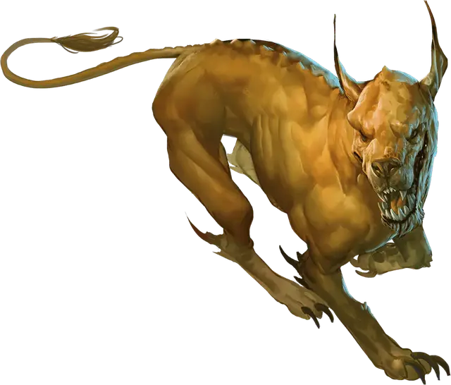

Мерцающий пёс
Blink Dog
Средняя Фея (Фея), законно-добрая

Класс Доспеха 13
Хиты 22 (4к8 + 4)
Скорость 40 футов
| мод | спас | ||
|---|---|---|---|
| СИЛ | 12 | +1 | +1 |
| ЛОВ | 17 | +3 | +3 |
| ТЕЛ | 12 | +1 | +1 |
| мод | спас | ||
|---|---|---|---|
| ИНТ | 10 | +0 | +0 |
| МДР | 13 | +1 | +1 |
| ХАР | 11 | +0 | +0 |
Навыки Восприятие +3, Скрытность +5
Чувства пассивное Восприятие 13
Языки Сильван, Язык Мерцающих псов
Опасность 1/4 (50 опыта)
Бонус мастерства +2
Среда обитания Лес
Особенности
Языки. - понимает Сильван, но не говорит на нем.
Острый слух и тонкий нюх. Пес совершает с преимуществом проверки Мудрости (Восприятие), полагающиеся на слух и обоняние.
Действия
Укус. Рукопашная атака оружием: +3 к попаданию, досягаемость 5 футов, одна цель. Попадание: Колющий урон 4 (1к6 + 1).
Телепортация (перезарядка 4–6). Пес магическим образом телепортируется вместе со всем несомым и носимым снаряжением, на расстояние до 40 футов в свободное пространство, которое он видит. До или после телепортации пес может совершить одну атаку укусом.
Описание
Мерцающий пес получил свое название за способность исчезать и возникать в другом месте. Он использует это умение и для нападения и для уклонения от чужих атак. У мерцающих псов старая вражда с ускользающими зверьми, и они сразу нападают на них, как только заметят.